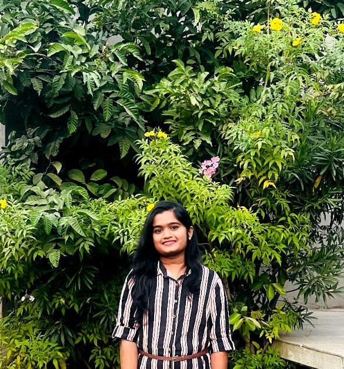

sharanya Akula

(COMPUTER SCIENCE ENGINEER)
INTERNATIONALLY CERTIFIED-I.O,USA
CAREER OBJECTIVE
I am seeking an entry level profession in the area of engineering specialized in computer science and taechnology,where i can implement my knowledge and skills for the development of my organization,simultaneously developing my self by maintaining good symbiotic relation ship.
ACADEMIC CREDENTIALS
- Bachelor of technology in sreenidhi institute of science and technology with current CGPA of 8.0(2021-2025)
- 10th SSC in jeevadan high school kamareddy-9.3/10(2018)
- Intermediate in sri chaitanya junior college,Hyderabad-85%(2019-2021)
PROJECTS
- calculator in python at code clause
- music player in python at code clause
- content management tool at bharat intern
- video conferencing website
- titanic survival prediction at code soft
INTERNSHIPS
- web-development intern at bharat intern for 2 months
- completed python development in code clause
- data science intern at code soft
CERTIFICATIONS
- NPTEL certification in the field of data science for engineers.
- Acheived python certificate at Code clause.
- completed web development certification at Udemy
ACHEIVEMENTS
- Received student of the year award from LIC.
- Come up with a new idea that improved things
- Worked on projects
CO-CURRICULAR ACTIVITIES
- One of the cordinator of "IEEE"club at our college.
- Done many event organizations at our college.
SKILLS
soft skills
- communication skills
- Leadership
- Time management
- Active listening
- computer literacy
Proffessional skills
- c,python,Java,c++,github fronted,Data science.
- Ms-office,word,excel
HOBBIES
- watching latest videos on technology and innovation.
- Reading entrepreneur magazines.
- Following motivational speakers on social media.
- volunteering organizations.
WORK EXPERIANCE
- content creator in geeks for geeks.
- part time tutions from 6th to 10th class.
CONTACT ME
linkedin
github